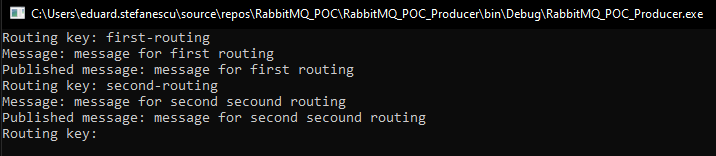
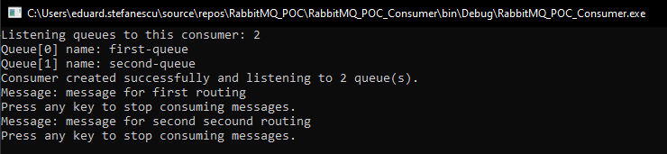

RabbitMQ Consumer with Docker in .NET
This is the last article from the RabbitMQ series. In this series, I explained all the RabbitMQ nodes using .NET and Docker. There will be other two articles, the first one is dedicated just for the Headers Exchange, because this type of Exchange needs more attention, considering that the sent messages need to be binding to the Exchange using x-match property and to the Queue using defined properties. And in the second one, I will explain a safer way of consuming messages and closing the connection, because this series is more educational oriented and plain methods were used for a better understanding.
In this article the Consumer node of the RabbitMQ topology will be presented, in the first part the core concepts will be cover, and in the second part, each line of code will be explained.
The first article from this series contains the environment setup with Docker and core fundamentals of RabbitMQ. You can check the other three articles here:
- https://stefanescueduard.github.io/2020/02/29/rabbitmq-producer-with-docker-in-dotnet/ (environment setup)
- https://stefanescueduard.github.io/2020/03/07/rabbitmq-exchange-with-docker-in-dotnet/
- https://stefanescueduard.github.io/2020/03/14/rabbitmq-queue-with-docker-in-dotnet/
Introduction
The RabbitMQ Consumer it’s the node to which the Queues are connected. This will receive all the messages sent by the Producer and followed some path to be consumed. A real-life example for the Consumer it will be, a logging system, where the Producer is the app that sent the log message and the Consumer is the Console or the API that will process the received message.
Useful tips
Here are some tips that I found useful:
- The lifetime of a
Consumeris as long as the application lifetime; - It’s not recommended to have a
Consumerthat consume only one message, but it’s totally fine to have aConsumersubscribed to aQueueas long as it sent multiple messages. That’s because, for obvious reasons, it’s not necessary to have this entire system to send only one message; - A
Consumerhas a uniquely identifiable tag and a subscription ID, which is the connection link with theQueue; - The exclusivity to the
Consumercan be made using theexclusiveflag, that means that theConsumerwill receive messages from only oneQueue; - And some
Consumerscan have a higher priority to the same messages over otherConsumers;
All the Consumers‘s properties can be read on the RabbitMQ website: https://www.rabbitmq.com/consumers.html.
Creating the Consumer
First of all, we need to know how many queues are listening to this consumer, so a message is prompt to enter the number of queues. After that, a connection to the RabbitMQ Server is made using a URI and specifying the ConnectionTimeout to its maximum value. This value is used just for this article purposes, also all the ConnectionFactory properties with few examples can be found here: https://www.rabbitmq.com/releases/rabbitmq-dotnet-client/v3.2.4/rabbitmq-dotnet-client-3.2.4-client-htmldoc/html/type-RabbitMQ.Client.ConnectionFactory.html.
You can check the first article where is another approach of creating the ConnectionFactory using the properties Hostname, UserName and Password.
You may notice that the IConnection and IModel fields are static, that’s because this is a Console App, and these two fields are used inside of each thread that is listening to a Queue. But these fields will be closed and disposed before the application finishes its execution.
Listening to the Queue(s)
Before start listening to the Queue(s), a CancellationTokenSource is created in order to be passed on each execution thread that will display a message, that’s because the thread will have the same lifetime as the application, and it’s also a safety check to cancel the Consumer subscription once the application ends.
According to the number of Queues entered, this Consumer is listening to, the Queue name is asked in order to create the connection between the Consumer and the Queue.
Then for each Queue, a thread is created and start listening to it.
Displaying the received message
The DisplayQueueMessage has the following parameters:
- The
queueNamewhich will listen to; - And the
cancellationTokenwhich represents the listener thread lifetime;
DisplayQueueMessage method explanation
As is described earlier, the listener will exist until the cancellationToken is not requested.
On line 5 the message is retrieved from the Queue and is checked if it’s null. If it’s not null, the message body which is an array of bytes will be decoded using the same encoding format as it was used to encode the message.
After displaying the retrieved message, the result is acknowledged in order to be deleted from the Queue and to display the next message.
This is not the nicest way to listen to the messages and can cause performance issues, that’s why I will create another article about listening events, that will be raised only when a message is published and redirected to a specific Queue.
Ending the connection
After the thread was created for each Queue, a message is prompt in order to display how many Queues are listening to the Consumer.
Then the cancellationTokenSource is cancelled, in order to stop the listening threads, after that the connection and channel are closed and disposed.
The WaitHandle is used to end the connection and the channel safely after the cancellation is signalled.
You can find the solution, with all four nodes on my Github account: https://github.com/StefanescuEduard/RabbitMQ_POC.
Topology result
By following the http://tryrabbitmq.com/ topology described in the previous articles, firstly the Exchange is created:
Then two Queues are created:
The Consumer is connected to them:
The last step is to publish the messages and checking the Consumer that is displaying them.
Producing messages for both
routing-keys:Checking
Consumerto see the sent messages:
Thanks for reading this article, if you find it interesting please share it with your colleagues and friends. Or if you find something that can be improved please let me know.